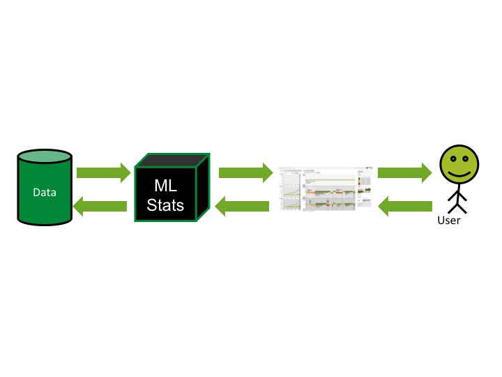
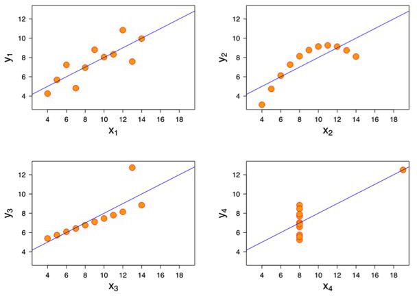
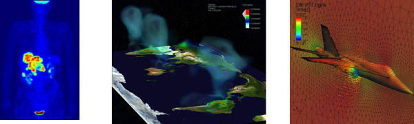
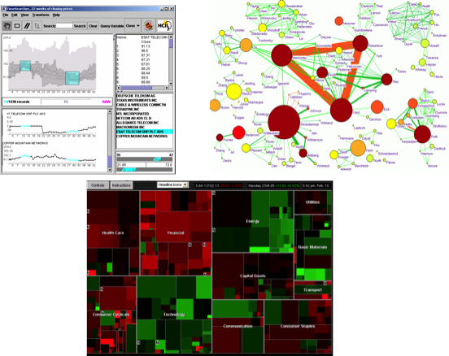

Intro to Big Data
John Alexis Guerra Gómez
@duto_guerra
Use spacebar and the arrows to advance slides
Outline
- What is Big Data?
- How to process/store it?
- How to make sense of it?
What is Big Data?
You might have heard of the Vs of Big Data
- Volume
- Velocity
- Variety
- and Veracity and Value
- Too ambiguous!! Let's go beyond that
How Big is big?
Can you fit it in one computer?
Yes? -> Then is not really big
Let's call it big data only if it doesn't fit on one computer (and has the 3Vs)
Why this criteria?
Because if it fits in one computer you don't need all the overhead of big data technologies, just use a traditional relational database.
Example: photo collection
- One photo -> 10MB
- 1k photos in a cellphone -> 10MB * 1k = 10000MB = 10GB
- 50k photos in your computer -> 10MB * 50k = 500GB
- Is that big data?
- No, you can fit that in one cheap external hard drive
- BTW, Flickr gives you 1000GB (1TB) for free
Problem: count how many blue photos in my collection?
How do you compute this?
Put all your photos in one computer
Go through all the collection and count
Flickr size
80+ trillion photos (80'''000''000'000.000)
That's big data
How many blue photos on Flickr?
How do you compute this?
Distribute the data among hundreds of thousand of computers (a cluster).
Compute subtotals on each chunk of the data. (Map)
Aggregate the subtotals into one big total. (Reduce)

How many computers do you need?
total / one computer capacity?
What if one computer breaks down?
We need redundancy -> Each photo is stored in many computers
How do we control versions? How to keep records? What goes where?
That's why we need big data!!
Technologies
- MapReduce (Hadoop, Hive, pig, Spark ...)
- NoSQL Databases (Redis, Cassandra, MongoDB, Neo4J)
- Distributed Relational (SQL) Databases (MySQL, PostgreSQL, Oracle, SqlServer)
- Many others
Hadoop
- Computing platform for big data
- Uses clusters for storing and processing the data
Hadoop Architecture

Spark
A distributed computing alternative of to map reduce.
- Easier to use
- Integrates better with traditional programming models
NoSQL Databases
- Scalable storage platforms that use techniques different to traditional SQL databases
- Sacrifices features for performance
Types of NoSQL
- Column Oriented: Cassandra, HBase, Redshift ...
- Key-value: Redis, memcached, Aerospike ....
- Document based: MongoDB, CouchDB, DynamoDB ...
- Graph based: Neo4J, Titan, ...
Bonus
Distributed Relational DB
- You can also use traditional databases on a distributed way.
- Divides the database into shards.
- Usually doesn't scale that well.
Others
- Google DataFlow
- Google's replacement for MapReduce based on flows.
- Supposed to scale better.
- AFAIK can only be used with Google's Cloud.
How to make sense of it?
- Statistical Analysis
- Machine Learning and Artificial Intelligence
- Visual Analytics (and data analytics)
Data Mining/Machine Learning

Information Visualization
Infovis + Algorithms

Traditional
Pros:
Cons:
|
Data Mining/ML
Pros:
Cons:
|
InfoVis
Pros:
Cons
|
Why should we visualize?
Anscombe's quartet

Anscombe's quartet

Anscombe's visualized
In Infovis we look for insights
- Deep understanding
- Meaningful
- Non obvious
- Actionable
Types of Visualization
- Infographics
- Scientific Visualization (sciviz)
- Information Visualization (infovis, datavis)
Infographics

Scientific Visualization
- Inherently spatial
- 2D and 3D

Information Visualization
Infovis Basics
Visualization Mantra
- Overview first
- Zoom and Filter
- Details on Demand
Perception Preference
Adapted from from:Tamara Munzner Book Chapter
Data Types
| 1-D Linear | Document Lens, SeeSoft, Info Mural |
| 2-D Map | GIS, ArcView, PageMaker, Medical imagery |
| 3-D World | CAD, Medical, Molecules, Architecture |
| Multi-Var | Spotfire, Tableau, GGobi, TableLens, ParCoords, |
| Temporal | LifeLines, TimeSearcher, Palantir, DataMontage, LifeFlow |
| Tree | Cone/Cam/Hyperbolic, SpaceTree, Treemap, Treeversity |
| Network | Gephi, NodeXL, Sigmajs |
Take home message
- Big data? Sure, If it doesn't fit on a computer
- How to process it? MapReduce, Spark, ...
- How to store it? HDFS, NoSQL, Distributed RDBMS
- How to make sense of it? Statistics, ML, Visual Analytics